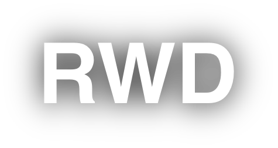
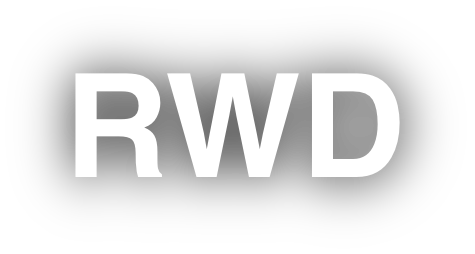

Responsive Web Design (RWD) er en tilgang til webdesign, der sikrer, at websteder leverer en optimal visningsoplevelse på tværs af en bred vifte af enheder, herunder desktop computere, tablets og mobiltelefoner. Det primære mål med RWD er at opbygge websteder, der er i stand til dynamisk at tilpasse sig forskellige skærmstørrelser og opløsninger uden at forringe brugeroplevelsen. Her er nogle nøglepunkter i forbindelse med Responsive Web Design.
Media queries er et afgørende værktøj i RWD. De tillader designere at anvende forskellige stilarter baseret på karakteristika som skærmens bredde, højde, opløsning og orientering (portrait eller landscape). Ved at anvende media queries kan et websted præsentere et tilpasset layout, der passer til brugerens enhed.
I et responsivt design skalerer billeder og andre medieelementer også i størrelse for at tilpasse sig forskellige enheder. Dette opnås ofte ved hjælp af CSS-funktioner som max-width, der sættes til 100%, så billederne aldrig er større end deres container-elementer.
Responsive Web Design er i dag en standardpraksis, fordi den spiller en afgørende rolle i at levere en konsistent brugeroplevelse uanset enhedens type eller størrelse. For at implementere RWD effektivt, kræver det en grundig planlægning og designstrategi samt en forståelse for de forskellige teknologier og metoder, der understøtter fleksible layout og brugervenlighed.